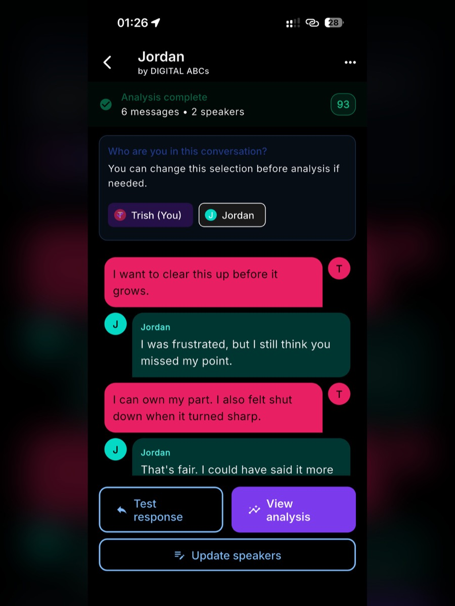
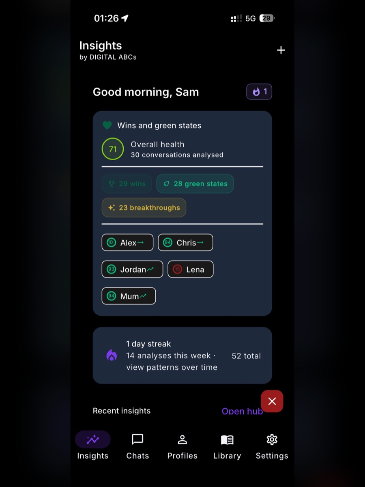

Paste the message
Add a text, DM, email, or short exchange. You can remove names or use a composite example.
Digital ABCs is an Australian self-quantification app studio
Linguistic Decoder helps you understand confusing messages, track conversation patterns over time, and respond from steadier ground without handing your judgement to a machine.


The problem we solve first
A confusing text can make you reread, second-guess, draft, delete, and start wondering whether you are the problem. Linguistic Decoder gives that moment structure: what was actually said, what the pattern might suggest, and how you could respond from steadier ground.
It is built for clarity, not control. The app does not diagnose anyone, read minds, or tell you what to do. It helps you slow down enough to make your own call.
Available now
Start with five free analyses. No sign-up needed to try.
Add a text, DM, email, or short exchange. You can remove names or use a composite example.
See what was said, what fear might be adding, and the possible readings with confidence notes.
Get calm response options that you can adapt, ignore, or use as a starting point.
Trust is the product
Digital ABCs is designed around evidence before confidence, human accountability, privacy by design, and clear boundaries on what AI can and cannot do.
Read the AI transparency statementContent submitted for analysis is processed to produce your result. It is not available for someone to browse back through or read as part of normal operation.
Your submitted content is yours. We do not sell it, and we do not use it to train models.
You are told when AI processing is involved, before you submit content.
AI is a support layer, not an authority. A person remains accountable for product boundaries and governance.
If the system detects a high-threat safety signal, it may log a non-readable safety event and check in with the user about immediate safety and whether they are choosing to stay in the relationship.
Digital ABCs privacy and analysis flow
User chooses a message and starts the analysis.
The framework redacts detected identifiers where possible.
Prepared text is processed for tone, patterns, and possible intent.
The report comes back with limits, confidence notes, and user judgement intact.
Governance-backed brand
Digital ABCs is an Australian business, ABN 79 088 385 489, based in New South Wales, Australia. The brand is currently going into trademarking, and the product portfolio is supported by documented governance, privacy, AI safety, and product assurance standards.
Product roadmap
Every Digital ABCs product has to earn its place. The roadmap is intentionally paced, with higher-risk tools held until the trust environment is ready.
Available
Communication insight for confusing messages, possible intent, tone, patterns, and calmer replies.
Explore the productNext release target
A future tool for understanding contract language and what you may be agreeing to. Planned after the current product cycle, roughly 12 months away.
With OT for review
Scenario-based social learning support, currently with an occupational therapist for review before release decisions.
Held for trust maturity
A continuity and life-admin concept that will wait until public trust in AI is greater and the assurance case is strong enough.
Questions people ask
No. It is a communication insight tool. It is not therapy, counselling, legal advice, diagnosis, surveillance, or emergency support.
No. It shows possible readings with confidence notes. The product is built against fake certainty.
Your messages are processed to return the result. They are not read by a human as part of normal operation, sold, or used to train AI models.
Digital ABCs is currently going into trademarking. Until registration is complete, the brand uses trademark-aware wording without claiming registered status.
Start with the product that is ready now
Try Linguistic Decoder with five free analyses. No sign-up needed to start.